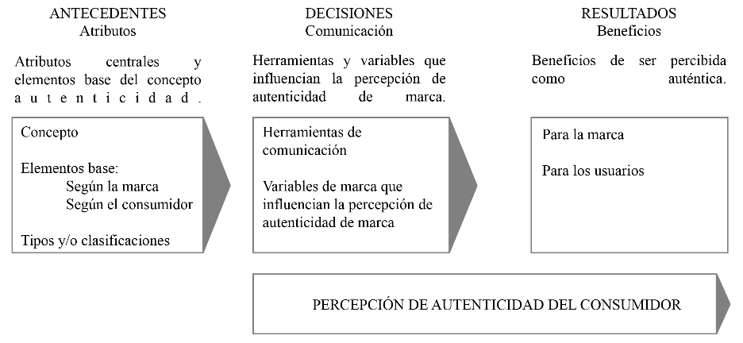

Resumen.
Este artículo tiene como propósito exponer los artículos pertinentes sobre la autenticidad de marca publicados en Proquest hasta el año 2022, de forma que sea sencillo identificar los vacíos existentes en la literatura. Para cumplir dicho propósito se ordenaron los artículos según el modelo ADO (Antecedentes, decisiones y resultados por sus siglas en inglés propuesto por Paul y Benito en 2017), con la finalidad de sintetizar la conexión que existe entre las diferentes investigaciones y así facilitar futuras investigación. Se concluye que hacen falta investigaciones que abonen a cada una de las partes del modelo ADO así como la interrelación de las tres etapas y cómo la modificación de una etapa, afecta a las siguientes para tener una mayor comprensión sobre la construcción de autenticidad de marca.
Palabras clave:
Autenticidad de marca, bibliografía, literatura
Abstract.
This article aims to present most relevant articles on brand authenticity published in Proquest up to the year 2022, so that it is easy to identify existing gaps in the literature. To fulfill this purpose, the articles were ordered according to the ADO model (antecedents, decisions and outcomes proposed by Paul and Benito in 2017), with the purpose of synthesizing the connection that exists between the different investigations and thus facilitating future research. It is concluded that research is needed that addresses each of the parts of the ADO model as well as the interrelation of the three stages and how the modification of one stage affects the following, to have a greater understanding of the construction of brand authenticity.
Keywords:
Brand authenticity, bibliographic, literature
La autenticidad de marca es considerada una de las cualidades fundamentales en las practicas actuales del marketing debido a la búsqueda constante de autenticidad por parte de los consumidores (Gilmore & Pine II, 2007; Potter, 2011). Esto ha generado que los gerentes de marca permeen sus marcas de los indicadores de autenticidad (Beverland, M. B., & Luxton, S., 2005; Beverland, M. B., Lindgreen, A., & Vink, M. W.,2008). Sin embargo, aún existe confusión alrededor de la naturaleza y uso del término (Beverland, M. B., 2005), debido a que no hay consenso, consistencia y claridad en cuanto a la conceptualización de lo que es la autenticidad (Eggers, F., O’Dwyer, M., Kraus, S., Vallaster, C., & Güldenberg, S., 2013; Beverland, M. B., & Farrelly, F. J.,2010).
Existe un acuerdo sobre la importancia de la autenticidad, sin embargo, no hay una definición universalmente aceptada (Beverland, Michael B., and Francis J. Farrelly, 2010). Algunas definiciones propuestas son:
“La autenticidad engloba lo que es genuino, real y/o verdadero” (Beverland, y Francis, 2010, p.3).
“La autenticidad no es algo que tengamos o no. Es una práctica, una elección consciente de cómo queremos vivir. La autenticidad es la decisión de ser reales y mostrarnos tal cual somos. La decisión de ser honestos. La decisión de dejar que se vea nuestro verdadero yo” (Brown, 2010, p.5).
“La autenticidad de marca es la medida en la que los consumidores perciben que una marca es fiel y verdadera hacia sí misma y a sus consumidores. A la vez de que apoya a los consumidores a ser fieles a sí mismos.” (Morhart, et al., 2015, p.4).
En estas tres definiciones, podemos encontrar que como común denominador está el ser real y/o verdadero. Sin embargo, las definiciones no especifican cuáles son los elementos que hay que mantener verdaderos. Por otro lado, la definición de Brené Brown abre la posibilidad de que, al ser una decisión, sí existen esos elementos sobre los que podemos incidir para expresar la autenticidad. Aunado a esto, las investigaciones arrojan que la autenticidad puede expresarse de formas cualitativamente muy diferentes, y también puede ser tanto una construcción social como una fuente de evidencia (Grayson, y Martinec, 2014).
Todos los artículos analizados se organizaron de acuerdo con un modelo llamado ADO (por sus siglas en inglés) propuesto por Paul y Benito (2017) en su artículo titulado “A review of research on outward foreign direct investment from emerging countries, including China: what do we know, how do we know and where should we be heading?”. Dicho modelo organiza la información en antecedentes, decisiones y resultados (outcomes).
En la Figura 1, se puede visualizar este orden y la relación que existe entre los elementos base de la autenticidad (antecedentes), las herramientas de comunicación y los elementos de marca que influencian la percepción de autenticidad (decisiones) y los beneficios que la percepción de autenticidad de marca trae tanto a las marcas como a los consumidores (resultados).
A este modelo se le agregó la percepción de autenticidad del consumidor, la cual se compone de las escalas que se utilizan para medir la autenticidad de marca percibida por parte de los consumidores. Cabe resaltar que la percepción de la autenticidad de marca solamente puede ser medida desde las “decisiones” y “resultados” ya que los antecedentes son elementos que solamente la marca puede definir, a diferencia de las decisiones y los resultados que son las formas y beneficios de que estos antecedentes se externalicen.
Figura 1.
Modelo ADO (por sus siglas en inglés) de la autenticidad de marca

Nota. Elaborado y ajustado por la autora según las investigaciones presentes en esta investigación con base en Paul, J., & Benito, G., 2017.
Iniciando con el apartado de antecedentes, se encuentran los artículos que hablan sobre los atributos centrales presentes en la conceptualización de la autenticidad de marca, su clasificación y los elementos que se utilizan para comunicarla.
En el apartado de decisiones, están los artículos que hablan sobre las herramientas de comunicación y los elementos de marca que influencian positivamente el ser percibido como una marca auténtica.
En el tercer apartado, el de resultados, se encuentran los artículos que hablan sobre los beneficios que trae a una marca y a los usuarios el hecho de que una marca sea percibida como auténtica.
Para finalizar, en el apartado de la percepción de autenticidad, se encuentran las escalas y dimensiones que se han utilizado para medir la percepción de autenticidad de marca.
Una vez entendido cómo es el proceso de construcción de autenticidad de marca (antecedentes, decisiones y resultados), se reorganizó la información en 4 ejes: atributos, comunicación, beneficios y percepción.
Atributos de la autenticidad. En el primer eje, el cual corresponde a los atributos de la autenticidad de marca, se ubican todos los artículos que hablan acerca de la autenticidad de marca como concepto, los elementos que las marcas utilizan como base para definir su autenticidad y los elementos que los usuarios buscan, así como los tipos y/o clasificaciones de la autenticidad.
Elementos base según las marcas. En cuanto a las investigaciones que abordan los elementos base que las marcas utilizan para definir su autenticidad, se encontraron cuatro artículos, los cuales se detallan a continuación:
Beverland, en su artículo publicado en 2005 titulado: “Crafting Brand Authenticity: The Case of Luxury Wines” expone que algunos de los elementos son: uso del lugar como referencia, compromiso con las prácticas de producción tradicionales y lo hecho a mano, así como la excelencia en la producción, consistencia de estilo e historia y cultura como referentes
Napolí, Dickson y Beverland en su artículo “The brand authenticity continuum: strategic approaches for building value” enuncian atributos como: compromiso de marca con la calidad, compromiso de marca con su herencia, expertise artesanal, conocimiento y tiempo invertido en desarrollar su conocimiento y habilidades, mantenimiento de los estándares de calidad, pasión por el oficio y simbolismos asociados a la marca
Peñaloza en su artículo “The Commodification of the American West: Marketers’ Production of Cultural Meanings at the Trade Show” detalla que algunos elementos son: valores y significados culturales, yuxtaposición de motivos comerciales, educativos y de negocios, tradición histórica y uso de la actividad empresarial como base para afirmaciones de autenticidad
Finalmente, Newman en su artículo titulado: “Authenticity Is Contagious: Brand Essence and the Original Source of Production” aporta el lugar de fabricación original como uno de los elementos que las marcas utilizan para definir su autenticidad.
Elementos base según el consumidor. Del lado del consumidor, en un artículo publicado por Leigh, Thomas W., Cara Peters, y Jeremy Shelton en 2006, se descubre que el consumidor busca la autenticidad de marca al adquirir un auto MG en los siguientes aspectos: cumplir con el estándar ideal que tienen sobre la marca, conservar la herencia de la marca, la experiencia de marca con el producto y la identidad que construye y confirma el usuario al utilizar la marca.
Por otro lado, en la investigación realizada por Munoz, C. L., Wood, N. T., & Solomon, M. R. en 2006 devela que el consumidor encuentra la autenticidad, en bares irlandeses, tanto en elementos tangibles como intangibles. Algunos de los elementos tangibles son: imágenes estereotípicas, color verde, leprechaun (un tipo de duende) y shamrock (trébol verde de 3 hojas). En cuanto a los elementos intangibles se encuentran: atmósfera y sus elementos, staff con acento irlandés y ambiente casual, divertido y acogedor.
Clasificaciones. La autenticidad de marca ha sido clasificada por diversas personas, dentro de los cuales destacan las clasificaciones de Grayson y Martinec, Beverland, Lindgreen y Vink, y Morhart, Malär, Guèvremont, Girardin, y Grohmann. En la literatura, las clasificaciones de la autenticidad surgen de la mezcla en distinto grado de las características indiciales, icónicas y existenciales de la marca. Por características indiciales se entiende que son aquellas que hacen que el perceptor crea que el objeto/ marca realmente tiene la conexión espacio-tiempo que transmite. Las características icónicas son aquellas que hacen que el objeto/marca sea percibida como que es similar a otra cosa. Para que estas características sean interpretadas de manera correcta, es necesario que el perceptor tenga cierto conocimiento previo o expectativa (Grayson y Martinec, 2004). Por último, las características existenciales son las características que se le atribuyen a la marca que ayudan a los consumidores a descubrir su verdadero yo a través de su consumo (Morhart et al., 2015).
Con la finalidad de entender mejor la perspectiva de cada uno de los autores, detallo a continuación sus diferentes perspectivas. Comenzando por la clasificación de Grayson y Martinec, en su artículo “Consumer Perceptions of Iconicity and Indexicality and Their Influence on Assessments of Authentic Market Offerings” publicado en 2004, se utilizaron dos variables para formular todas las clasificaciones: las características indiciales y las icónicas. Si lo vemos como un espectro, estas variables se posicionan en los extremos indicando se puede tener una autenticidad de marca puramente indicial, otra puramente icónica y seis grados distintos según la cantidad de elementos indiciales o icónicos presentes en la aplicación de marca.
Iniciando por clarificar los extremos, la autenticidad indicial la definen como aquella cuyas características están ligadas de manera fáctica y espaciotemporal a otra cosa. Por ejemplo, dos plumas para escribir pueden verse exactamente iguales, sin embargo, la pluma auténtica de Shakespeare será la que realmente usaba. En el lado contrario, la autenticidad icónica es la que se usa para describir algo cuya manifestación física se parece, asemeja o hace alusión a algo que es auténticamente indicial, lo cual hablaría de una reproducción o una recreación auténtica. Por ejemplo, cuando vas a un museo y te venden una pluma como la que Shakespeare utilizaba, se sabe que no es justo la que él usó, sin embargo, la pluma sería una reproducción fiel de la que él usaba.
En las seis clasificaciones del centro, yendo de la clasificación más puramente indicial a la más puramente icónica, según Grayson y Martinec, se identifican: Indicialidad real ligada al habitante: describe cosas que se creen que tienen una conexión espaciotemporal con una persona. Ejemplo: el penacho de Moctezuma; Indicialidad real ligada a la era del habitante: describe cosas que se creen que tienen una conexión espaciotemporal con la era de una persona. Ejemplo: un cuaderno como los que se utilizaban en la época de Da Vinci; Indicialidad hipotética ligada al habitante: describe cosas que potencialmente pudieron haber estado ligadas espaciotemporalmente con una persona. Ejemplo: la primer Snitch dorada atrapada por Harry Potter exhibida en el parque de diversiones de Harry Potter.
En cuando a las icónicas, encontramos: Icónica con historia: algo que parece una imagen construida sobre los hechos históricos a los que el consumidor ha estado expuesto. Ejemplo: la reproducción de la habitación de Van Gogh según lo que él relataba que era; Icónica con objetos viejos: algo que parece una imagen construida al exponer al consumidor a como envejecen las cosas. Ejemplo: una silla recién hecha que se vea como que el tiempo le ha pasado; Icónica con ficción: algo que parece una imagen construida al exponer al consumidor a narrativas ficticias. Ejemplo: la decoración del castillo de Hogwarts basado en las descripciones de los libros.
Para Beverland, Lindgreen y Vink, según lo expuesto en su artículo “Projecting authenticity through advertising”, la autenticidad solamente se puede clasificar de 3 formas las cuales se componen de dos tipos distintos de elementos y la suma de los dos. Autenticidad pura o literal: la cual manifiesta un compromiso inquebrantable con la tradición y el lugar, y hace uso de características indiciales; Autenticidad aproximada: son impresiones simbólicas o abstractas sobre la tradición creadas por publicistas, la cual utiliza características icónicas; Autenticidad moral: Creada a partir de una necesidad interna y no está enfocada en una demanda externa, la cual hace uso tanto de características indiciales como icónicas (Beverland et al., 2008).
Finalmente, para Morhart, Malär, Guèvremont, Girardin, y Grohmann, la autenticidad de marca es algo binario: existe o no existe, por tanto, no es clasificable. Sin embargo, proponen una clasificación de tipos de elementos que construyen la autenticidad de marca los cuales deben de ser interrelacionados entre sí para dar como resultado una marca percibida como auténtica las cuales son tres: Indiciales: Elementos basados en hechos o evidencia verificable de la marca como las etiquetas de origen, edad, ingredientes o desempeño; Icónicos: Elementos basados en asociaciones mentales subjetivas construidas por la marca para los consumidores a diferencia de las propiedades objetivas que están presentes en la autenticidad indicial; Existenciales: Elementos que ayudan a los consumidores a descubrir su verdadero yo o a que se sientan más en contacto con su verdadero yo.
Comunicación de la autenticidad. En el segundo eje de la clasificación de toda la literatura revisada, se encuentra la comunicación, sección en la que se encuentran los artículos que hablan acerca de las herramientas de comunicación y/o difusión que son útiles para proyectar la autenticidad de marca y las variables de marca que influencian la percepción de autenticidad de marca.
Herramientas. Comenzando con las herramientas, la primera de ellas se encuentra en el artículo “Crafting Brand Authenticity: The Case of Luxury Wines” realizado por Michael B. Beverland, cuya investigación analiza las estrategias que 26 marcas de vinos de lujo utilizan para proyectar su autenticidad a los consumidores. Para estas marcas es crucial ser percibidas como auténticas ya que gracias a ello refuerzan su estatus, pueden dominar el establecimiento de los precios y alejar a los competidores. Para lograr esta proyección, la herramienta que utilizaron fue el “storytelling”. Las marcas crearon una historia a través la cual lograron que el público las reconociera como sinceras y auténticas al expresar su unicidad, pasión por la producción artesanal de vino, su relación con el lugar y poner en segundo término sus motivos comerciales (Beverland, 2005).
En el artículo de Lisa Peñaloza titulad: “The Commodification of the American West: Marketers’ Production of Cultural Meanings at the Trade Show” en el cual se analiza empíricamente los procesos que los especialistas de marketing utilizan para crear significados culturales en una feria de ganado occidental y rodeo, se encuentró que el regionalismo es uno de los principales factores que ayudan a la construcción de significados culturales, además del intercambio que sucede entre los productores y consumidores en la creación de cultura. Otro de los factores más importantes fue el uso y adaptación de la historia a través del tiempo. Adaptar la historia se refiere a evolucionar el discurso y la forma de proyectar y comunicar la tradición a lo largo del tiempo de manera que la tradición sea algo que permanezca vigente. Y como tercer y último factor destacado, fue el despertar en los consumidores el uso de la imaginación con la finalidad de que los simbolismos o imágenes proyectadas se vean amplificadas por la mente del consumidor (Peñaloza, 2000).
Otra herramienta utilizada para proyectar la autenticidad es la publicidad, tal y como lo describen y comparten Beverland, Lindgreen y Vink en su artículo titulado: “Projecting authenticity through advertising.” En esta investigación se llevaron a cabo 23 entrevistas a profundidad semi estructuradas a consumidores, mercadólogos o compradores B2B, que consumieran o no cerveza trapista. El objetivo de las entrevistas fue explorar la respuesta que tenía el consumidor ante distintos anuncios de cerveza y si los catalogaba como auténticos o no. Los descubrimientos de dicha investigación derivan en la identificación de las tres formas de autenticidad antes descritas. Sin embargo, cuando los entrevistados tenían que definir si consideraban la marca auténtica o no, estos utilizaban solo una de las tres formas de autenticidad para evaluar los anuncios, basándose en las características indiciales o icónicas que percibían. Esta investigación concluye en que la publicidad juega un rol muy importante para reforzar y construir la imagen de autenticidad ya que a través de ella se puede lograr proyectar los 3 tipos de autenticidad (pura, aproximada y moral), logrando así que la percepción se permee en la mayor cantidad de consumidores posibles (Beverland, Lindgreen y Vink, 2008).
Para finalizar con esta sección está el artículo de Dwivedi, quien considera que la percepción de autenticidad de marca es el resultado de la clara comunicación del posicionamiento de marca ya sea por medio de la publicidad, redes sociales, patrocinios y/o acciones de responsabilidad social. Sin embargo, en su artículo titulado: “Building brand authenticity in fast-moving consumer goods via consumer perceptions of Brand marketing communications” expone que al menos esto es real para las marcas energéticas que ya llevan tiempo en el mercado. Otra de sus conclusiones presente en esta investigación es que para que las estrategias de comunicación sean fructíferas se debe de comunicar de manera efectiva la filosofía, promesa de marca, y la personalidad de la marca, así como cumplir con lo prometido, ya que estos primeros tres aspectos son elementos clave de la identidad de marca que, al estar alineados con la imagen de marca, afectan positivamente la percepción de autenticidad de marca (Dwivedi, 2018).
Sumando a la investigación de Dwivedi, la investigación realizada por Wan Abdul Ghani profundiza en las cuatro formas de comunicación de marketing utilizadas también por Dwivedi: publicidad, redes sociales, patrocinio y acciones de responsabilidad social, pero con la finalidad de determinar cuál(es) impacta(n) directamente a la autenticidad de marca en el rubro de marcas locales de café. Los hallazgos encontrados develan que las redes sociales son las que tienen la correlación más alta, sin embargo, se debe de tomar en cuenta que la edad de la muestra encuestada fue mayoritariamente de 20 – 29 años. Esta investigación suma al conocimiento que se tiene sobre la autenticidad de marca, no obstante, el autor recomienda extenderla a otros rubros y rangos de edad para tener una perspectiva más amplia de los descubrimientos (Wan Abdul Ghani, Wan & Rashid, Norhidayah, 2020).
Variables de marca que influencia la autenticidad de marca. Dentro de los artículos que hablan sobre las variables de marca que influencian la percepción de autenticidad de marca se encuentra la investigación titulada “Authenticity in branding – exploring antecedents and consequences of brand authenticity” realizada por Fritz, Schoenmueller y Bruhn, la cual demuestra que la autenticidad de marca es influenciada por las variables de marca que están estrechamente relacionadas con el pasado de marca (herencia de marca y nostalgia de marca), con su virtud (a través de la comercialización de marca, claridad de marca y el compromiso social de la marca), la representación de marca por parte de los empleados (pasión de los empleados) y la identificación del consumidor con la marca (legitimidad de marca y la auto congruencia con la persona que actualmente se es).
La investigación toma en cuenta el nivel de participación del consumidor para con la marca y el impacto (o no) de las diferentes variables de marca para cada población. El resultado encontrado fue que el efecto que produce la herencia de marca en la percepción de autenticidad de marca es mucho mayor para los consumidores con bajo nivel de participación a comparación de los de alto nivel. Otra diferencia es que las señales que pueden ser procesadas de manera más sencilla, pueden ser más persuasivas para los consumidores de bajo nivel de participación, ya que, al no mostrar una preferencia de marca, utilizan la percepción de autenticidad de marca como una señal de calidad.
La variable que ejerce el efecto más fuerte sobre la autenticidad de marca es el ajuste cultural percibido, es decir, la legitimidad de marca entre el consumidor y la marca. Por tanto, se sugiere que los gerentes de marca comprendan la cultura, los símbolos y el comportamiento (valores y normas) que permean al consumidor al que se dirigen, con la finalidad de integrar estas características a la cultura de la marca.
Otra variable para tomar en cuenta es la coherencia entre el comportamiento de marca y su propósito. Para mejorar la percepción de autenticidad, la investigación arrojó que es necesario implementar una política que busque la preservación de la imagen e identidad de marca, la cual incluye factores como: valores, normas, misión y todas las actividades de comunicación de la marca, con la finalidad de tener un comportamiento de marca consistente y así reforzar la percepción de autenticidad de marca (Fritz, & Bruhn, 2017).
Beneficios de la autenticidad. En el tercer eje, el cual corresponde a los beneficios de la autenticidad, se encuentran los artículos que hablan acerca las variables de marca que se ven impactadas positivamente por la percepción de autenticidad por parte del consumidor, así como las necesidades que los consumidores cubren con estas marcas.
Beneficios para la marca. En primera instancia, tal y como se puede leer en el único artículo encontrado sobre la autenticidad de marca en México, realizado por Echeverría-Ríos, Medina-Quintero y Abrego-Almazán, el cual se enfocó en el sector cervecero del Noreste de México, se descubrió que tanto la autenticidad-compromiso-calidad de marca y la autenticidad- sinceridad afectan positivamente la imagen de marca y la reputación, a diferencia de la autenticidad-herencia la cual no influye en ninguna de las dos variables antes mencionadas (Echeverría, et al., 2021). La investigación realizada por Ballantyne, Warren, y Nobbs, titulada “The evolution of brand choice” refuerza el hallazgo de Echeverría-Ríos, Medina-Quintero, y Abrego-Almazán ya que detalla la influencia que ejerce la herencia y la percepción de autenticidad sobre la imagen de marca. Partiendo de la noción de que las marcas carecen de funcionalidad y de significativa diferenciación entre sí, los investigadores identifican a la imagen de marca como la variable a potenciar para lograr proyectar esta diferenciación entre productos al ofrecer distinción e individualidad. Debido a que la imagen de marca moldea la percepción de los atributos de ésta por parte del consumidor y afectan la elección de marca, los autores consideran que es muy importante que dentro del plan de marketing se considere desarrollar marcas que engloben elementos de herencia y de autenticidad, ya que estas dos variables impactan positivamente la imagen de marca, y así los consumidores las percibirán como marcas expertas en el rubro y dignas de confianza (Ballantyne, et al., 2006).
Pasando a otra variable, en la investigación realizada por Fritz, Schoenmueller y Bruhn en 2017, ya anteriormente mencionada, se encontró que la autenticidad de marca afecta de manera positiva la relación entre el consumidor y la calidad de marca en marcas de servicios y venta minorista, la cual a su vez influencia positivamente el comportamiento del consumidor para con la misma. Además, fomenta un fuerte lazo emocional entre el consumidor y la marca, lo cual se traduce en lealtad a la marca, aumento de intención de compra y la voluntad de pagar un precio premium, así como la tolerancia para experimentar malas experiencias con la marca y olvidar errores (Fritz, et al., 2017). En el sector de las marcas de lujo, Adiati y Nuraini en su artículo titulado: “Exploring the Consequences of Brand Authenticity”, se exploraron las consecuencias que trae la autenticidad de marca en este sector, además de analizar el efecto que ejerce la relación de calidad y confianza de marca en la intención de compra y su relación con la autenticidad. Los hallazgos develan que, a diferencia del sector de servicios y venta minorista, la relación de calidad de marca no influencia la intención de compra de marcas de lujo, a diferencia de la confianza en la marca, la cual a su vez es influenciada por la percepción de autenticidad de marca y ésta sí se traduce directamente en un aumento en la intención de compra (Adiati Pratomo, et al., 2020).
Por otro lado, Eggers, O’Dwyer, Kraus, Vallaster, y Güldenberg en su estudio titulado: “The impact of brand authenticity on brand trust and SME growth: A CEO perspective.” confirman que la autenticidad de marca ayuda a impulsar el crecimiento de las pymes en los mercados debido a que tanto los consumidores como otros interesados buscan sinceridad y sentido en las marcas que eligen, lo que se traduce en confianza en la marca, y esta confianza se traduce en aumento en la intención de compra. Ser claro y transparente sobre de dónde viene la compañía y quién es hoy, ósea el comunicar esta parte de su autenticidad, trae como consecuencia la confianza en la marca. Debido a la transparencia que el internet y las redes sociales han traído al día a día, es necesario que las empresas, desde todas sus vertientes, sean no solo percibidas como auténticas por su comunicación. El reto no está en comunicar la autenticidad de marca, sino el fomentar culturas organizacionales que la potencien y alienten (Eggers, et al., 2013).
El hallazgo más importante de la investigación titulada: “Brands Taking a Stand: ¿Authentic Brand Activism or Woke Washing?” realizada por: Vredenburg, Kapitan, Spry, y Kemper es que cuando las marcas alinean su mensaje activista, propósito, valores y prácticas corporativas, crean el mayor potencial para el cambio social y las mayores ganancias en su valor de marca. Por otro lado, si estas cuatro variables tienen discrepancia, se verá dañado su valor de marca y su potencial para hacer un cambio social (Vredenburg, et al.,2020).
Sumando más beneficios para las marcas que sean percibidas como auténticas, está el estudio realizado por Lu, Gursoy y Lu, titulado “Authenticity perceptions, brand equity and brand choice intention: the case of ethnic restaurants” el cual está enfocado en el sector de restaurantes étnicos y comprueba que la percepción de autenticidad de marca afecta positivamente a las cuatro dimensiones del valor de marca: conocimiento de la marca, asociaciones de marca, calidad percibida y lealtad hacia la marca. Las cuatro dimensiones también guardan cierta relación entre sí, como el conocimiento de marca y la imagen de marca, dimensiones que entre más alto sea su valor, predicen una mayor probabilidad de lealtad hacia la marca. Por otro lado, la calidad percibida por si sola influencia directa y positivamente a la lealtad hacia la marca, así como la preferencia de compra. Además, en este estudio se comprueba que el valor de marca impacta positivamente a la elección de marca del consumidor. Por tanto, se puede inferir que el hecho de que una marca sea percibida como auténtica, aumenta sus posibilidades de ser elegia por el consumidor (Lu, et al., 2015).
Oh, Prado, Korelo, y Frizzo en su investigación titulada "The effect of brand authenticity on consumer–brand relationships" realizada a través de 347 encuestas a consumidores en Estados Unidos y Brasil, descubrieron que la autenticidad de marca influencia el reforzamiento del yo, lo cual conecta al yo con la marca y disminuye la distancia entre el consumidor y la marca. Esto trae como consecuencia el aumento en la intención de compra, así como el deseo de visitar la tienda (ya sea física o virtual) y recomendar la marca a otras personas (Oh, Prado, Korelo, y Frizzo, 2019).
Finalmente, en el estudio titulado: “Local versus global food consumption: the role of brand authenticity" realizado por Riefler a marcas de bebidas locales y globales, se encontró que las marcas globales se ven mayormente beneficiadas al ser percibidas como auténticas comparativamente hablando contra las locales. Esto quiere decir que, a manera de estrategia, las marcas locales deberían no sólo apostar a su autenticidad sino también a salir de la localidad, ya que cada día que pasa, el efecto que lo local tiene en el consumidor va disminuyendo (Riefler, 2020).
Beneficios para los usuarios. En cuanto a los beneficios que la percepción de autenticidad da a los consumidores están los encontrados por Beverland en su estudio “The quest for authenticity in consumption: consumers’ purposive choice of authentic cues to shape experienced outcomes.” Los cuales son tres: control, conexión y virtud. Cuando los consumidores buscan control, usualmente tienen experiencia de primera mano y juicio independiente, además de buscar resolver un problema práctico de manera eficaz. Los consumidores que buscan conexión son impulsados por sus juicios de autenticidad, además, siguen las normas comunitarias y buscan estar más cerca de los demás. Y por último, los consumidores que buscan la virtud a través de marcas auténticas, buscan marcas que aborden necesidades universales y que apliquen de manera consistente un conjunto de valores morales (Beverland y Farelly, 2010).
En el estudio realizado por Oh, Prado, Korelo, y Frizzo, el cual fue anteriormente mencionado en los beneficios para la marca, también expone beneficios para los consumidores ya que la percepción de autenticidad de marca influencia positivamente los tres activos que refuerzan al yo: la atracción del yo, el enriquecimiento del yo y la habilitación del yo. Cuando se satisface la atracción del yo, el consumidor busca reforzarse a través de recibir beneficios hedónicos y placenteros. Al enriquecer el yo, busca reforzarse a través de beneficios simbólicos que representen al yo ideal del pasado, presente y futuro. Y por último al habilitar el yo, busca recibir beneficios funcionales (Oh, Prado, Korelo, y Frizzo, 2019).
Percepción de la autenticidad. Finalmente, los artículos que están dentro del cuarto y último eje, el de percepción, son aquellos que proponen y prueban una escala para medir la percepción de la autenticidad de marca.
Escalas de medición. Se analizaron diferentes artículos que medían la percepción de autenticidad de marca en rubros completamente diferentes entre sí, donde ninguno era del sector de diseño. Con base en esos artículos, se ilustraron las dimensiones mayoritariamente utilizadas, las cuales son: honestidad (Akbar, 2016; Becker, et al., 2019; Morhart, et al., 2015; Napoli, et al., 2014; Tran, 2018), originalidad (Akbar, 2016; Bruhn et al., 2012; Tran, 2018), herencia (Becker et al., 2019; Beverland, 2006; Napoli et al, 2014), calidad (Akbar, 2016; Beverland, 2006; Napoli et al., 2014), consistencia (Beverland, 2006; Bruhn, et al., 2012; Morhart et al., 2015;), e integridad (Morhart et al., 2015; Tran, 2018; Bruhn et al., 2012).
Al analizar las dimensiones según la cercanía con las definiciones de autenticidad, se posicionó en primer lugar a la honestidad, ya que, las definiciones de autenticidad presentan atributos como “genuino, real y/o verdadero” (Beverland, & Farrelly, 2010); y la honestidad es medida a través de la percepción de la presentación de un mensaje creíble (Becker et al., 2019), nivel de credibilidad (Morhart, 2015), de realismo (definido por el autor como sinceridad) (Tran, 2018), de sinceridad (Napoli et al., 2014) y de honestidad (Akbar, 2016).
Otra dimensión con mucha cercanía a autenticidad es originalidad, ya que es definida como “genuinidad y singularidad de marca” (Bruhn et al., 2012) y lo genuino es considerado como auténtico.
Por último, la tercera dimensión con mayor cercanía es la herencia, aunque su proximidad no es conceptual sino por aplicación de marca, como lo expresa Beverland en su artículo titulado: “The ‘real thing’: Branding authenticity in the luxury wine trade”. Él dice que las marcas tienen en sus historias individuales el potencial para construir sus programas de marca. Construir un puente entre la marca y su historia, dota a la marca de significado y ante los ojos de los consumidores, el tener una herencia sólida les indica confiabilidad. La herencia se relaciona con la autenticidad ya que parte de “mostrar su verdadero ser” radica en honrar su historia, la cual puede ser expresada a través de características indíciales (Morhart et al., 2015).
Después de organizar toda la información, analizar las deficiencias o áreas que no han sido exploradas por los estudios y con la finalidad de aumentar la comprensión que se tiene sobre la construcción de autenticidad de marca, se encontraron, principalmente, los siguientes hallazgos:
La autenticidad y la autenticidad de marca, como concepto, tienen confusiones en su aplicación debido a que no existe un consenso en su definición.
El concepto de autenticidad de marca es un área inexplorada en México.
Hacen falta investigaciones que abonen a cada una de las partes del modelo ADO así como la interrelación de las tres etapas y cómo la modificación de una etapa, afecta a las siguientes o anteriores.
Adiati Pratomo, Luki, y Nuraini Magetsari, Ovy Noviati. (2020). Exploring the Consequences of Brand Authenticity. Atlantis press, 151, 336 - 339.
Akbar, M. (2016). Reconceptualizing Brand Authenticity and Validating Its Scale. Obtenido de http://wdg.biblio.udg.mx:2048/login?url=https://www.proquest.com/dissertations-theses/reconceptualizing-brand-authenticity-validating/docview/1810990400/se-2?accountid=28915
Almutlaq, Z. (2018). Understanding creativity: The nature of children's creativity and the development of creativity (Order No. 27539191). Available from ProQuest One Academic. (2316417139). Retrieved from http://wdg.biblio.udg.mx:2048/login?url=https://www.proquest.com/dissertations-theses/understanding-creativity-nature-childrens/docview/2316417139/se-2?accountid=28915
Ballantyne, R., Warren, A., & Nobbs, K. (2006). The evolution of brand choice. Journal of Brand Management, 13, 339-352. https://doi.org/10.1057/palgrave.bm.2540276
Becker, Maren & Wiegand, Nico & Reinartz, Werner. (2019). Does It Pay to Be Real? Understanding Authenticity in TV Advertising. Journal of Marketing. 83. 24-50. 10.1177/0022242918815880
Beverland, M. B. (2005). Crafting brand authenticity: The case of luxury wines. Journal of Management Studies, 42(5), 1003–1029. https://doi.org/10.1111/j.1467-6486.2005.00530.x
Beverland, M. B., & Luxton, S. (2005). Managing integrated marketing communication (IMC) through strategic decoupling: How luxury wine firms retain brand leadership while appearing to be wedded to the past. Journal of Advertising, 34(4), 103-116. https://doi.org/10.1080/00913367.2005.10639207
Beverland, M. (2006). The real thing: branding authenticity in the luxury wine trade. Journal of Business Research, 59(2), págs. 251-258.
Beverland, M. B., Lindgreen, A., & Vink, M. W. (2008). Projecting authenticity through advertising: Consumer judgments of advertisers' claims. Journal of Advertising, 37(1), págs. 5-15. Recuperado el octubre de 2021, de http://wdg.biblio.udg.mx:2048/login?url=https://www.proquest.com/scholarly-journals/projecting-authenticity-through-advertising/docview/236578285/se-2?accountid=28915
Beverland, M.B. and Farelly, F.J. (2010). The quest for authenticity in consumption: consumers’ purposive choice of authentic cues to shape experienced outcomes. Journal of Consumer Research, 36(2), págs. 838-856.
Brown, B. (2010). The gifts of imperfection. En B. Brown, Los dones de la imperfección (B. G. Steinbrun, Trad., Primera edición en español ed., pág. 401). Minnesota, EE.UU.: Penguin Random House Grupo Editorial USA, LLC. Recuperado el twenty-six de octubre de 2021
Bruhn, M., Schoenmüller, V., Schäfer, D. and Heinrich, D. (2012), “Brand authenticity: towards a deeper understanding of its conceptualization and measurement”, Advances of Consumer Research, Vol. 40, pp. 567-576.
Dwivedi, A., & McDonald, R. (2018). Building brand authenticity in fast-moving consumer goods via consumer perceptions of brand marketing communications. European Journal of Marketing, 52(7/8), 1387–1411. doi:10.1108/ejm-11-2016-0665
Echeverría-Ríos, O. M., Medina-Quintero, J. M., & Abrego-Almazán, D. (2021). La autenticidad de la marca, su efecto en la imagen y reputación de marca de productos cerveceros en México. Estudios Gerenciales, 37(160), 364-374. https://doi.org/10.18046/j.estger.2021.160.3966
Eggers, F., O’Dwyer, M., Kraus, S., Vallaster, C., & Güldenberg, S. (2013). The impact of brand authenticity on brand trust and SME growth: A CEO perspective. Journal of World Business, 48(3), 340-348.
Fritz, K., Schoenmueller, V., & Bruhn, M. (2017). Authenticity in branding – exploring antecedents and consequences of brand authenticity. European Journal of Marketing, págs. 324-348. doi: http://dx.doi.org/10.1108/EJM-10-2014-0633
Gilmore, J., & Pine II, B. (2007). Authenticity: What Consumers Really Want. Harvard Business Review Press.
Grayson, K. and Martinec, R. (2014). Consumer perceptions of iconicity and indexicality and their. Journal of Consumer Research, 31(2), págs. 296-312.
Leigh, Thomas W., Cara Peters, and Jeremy Shelton (2006), “The Consumer Quest for Authenticity: The Multiplicity of Meanings Within the MG Subculture of Consumption,” Journal of the Academy of Marketing Science, 34 (4), 481–93.
Lu, A.C.C., Gursoy, D. and Lu, C.Y. (2015), “Authenticity perceptions, brand equity and brand choice intention: the case of ethnic restaurants”, International Journal of Hospitality Management, Vol. 50, pp. 36-45.
Morhart, F., Malär, L., Guèvremont, A., Girardin, F. and Grohmann, B. (2015). Brand authenticity: an integrative framework and measurement scale. Journal of Consumer Psychology, 25(2), págs. 200-218.
Munoz, C. L., Wood, N. T., & Solomon, M. R. (2006). Real or blarney? A cross-cultural investigation of the perceived authenticity of Irish pubs. Journal of Consumer Behaviour, 5(3), 222-234. https://doi.org/10.1002/cb.174
Napoli, J., Dickinson, S.J., Beverland, M.B. and Farrelly, F. (2014), “Measuring consumer-based Brand authenticity”, Journal of Business Research, Vol. 67 No. 6, pp. 1090-1098.
Napoli, J, Dickinson-Delaporte, S., & Beverland, M (2016). The brand authenticity continuum: Strategic approaches for building value. Journal of Marketing Management, 32(13-14), 1201-1229. https://doi.org/10.1080/0267257x.2016.1145722
Newman, George E., and Ravi Dhar (2014), “Authenticity Is Contagious: Brand Essence and the Original Source of Production,” Journal of Marketing Research, 51 (3), 371–86.
Oh, H., Prado, P.H.M., Korelo, J.C. and Frizzo, F. (2019), "The effect of brand authenticity on consumer–brand relationships", Journal of Product & Brand Management, Vol. 28 No. 2, pp. 231-241. https://doi.org/10.1108/JPBM-09-2017-1567
Paul, J., & Benito, G. R. G. (2017). A review of research on outward foreign direct investment from emerging countries, including China: what do we know, how do we know and where should we be heading? Asia Pacific Business Review, 24(1), 90–115. doi:10.1080/13602381.2017.1357316
Peñaloza, Lisa (two thousand), “The Commodification of the American West: Marketers’ Production of Cultural Meanings at the Trade Show,” Journal of Marketing, 64 (October), 82–109.
Potter, A. (2011). The Authenticity Hoax: Why the “Real” Things We Seek Don't Make Us Happy. Harper Perennial.
Riefler, P. (2020), "Local versus global food consumption: the role of brand authenticity", Journal of Consumer Marketing, Vol. 37 No. 3, pp. 317-327. https://doi.org/10.1108/JCM-02-2019-3086
Tran, Van-Dat. (2018). The Brand Authenticity Scale : Development and Validation. 14. 277-291. 10.7903/cmr.18581.
Vredenburg, J., Kapitan, S., Spry, A., & Kemper, J. A. (2020). Brands Taking a Stand: Authentic Brand Activism or Woke Washing? Journal of Public Policy & Marketing, 074391562094735. doi:10.1177/0743915620947359
Wan Abdul Ghani, Wan & Rashid, Norhidayah. (2020). The Relationship of Brand Marketing Communication and Brand Authenticity. 5. 43-49.
Licencia: Esta obra está protegida bajo una Licencia Creative Commons Atribución-CompartirIgual 4.0 Internacional.